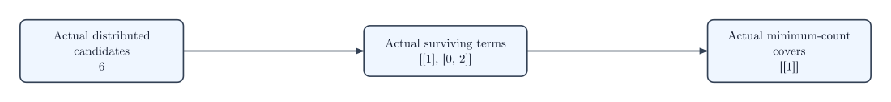
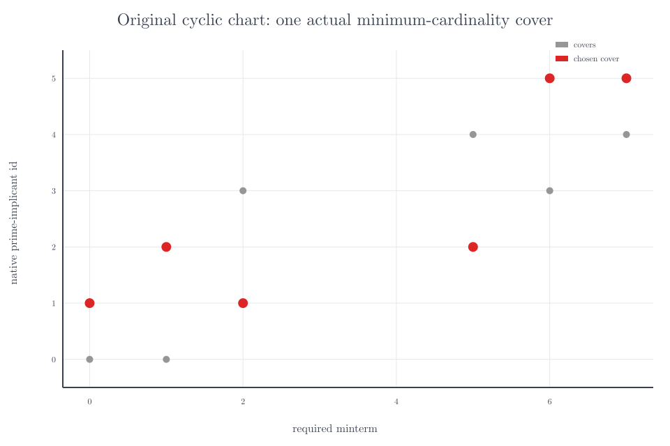
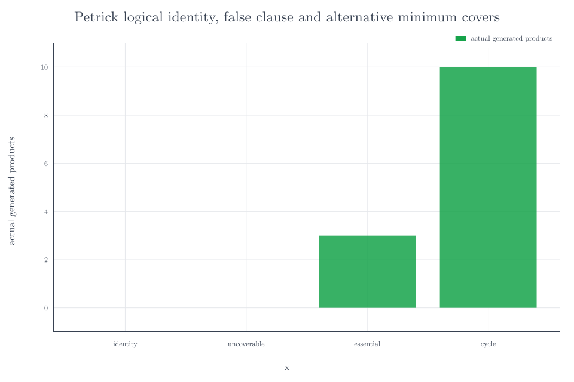
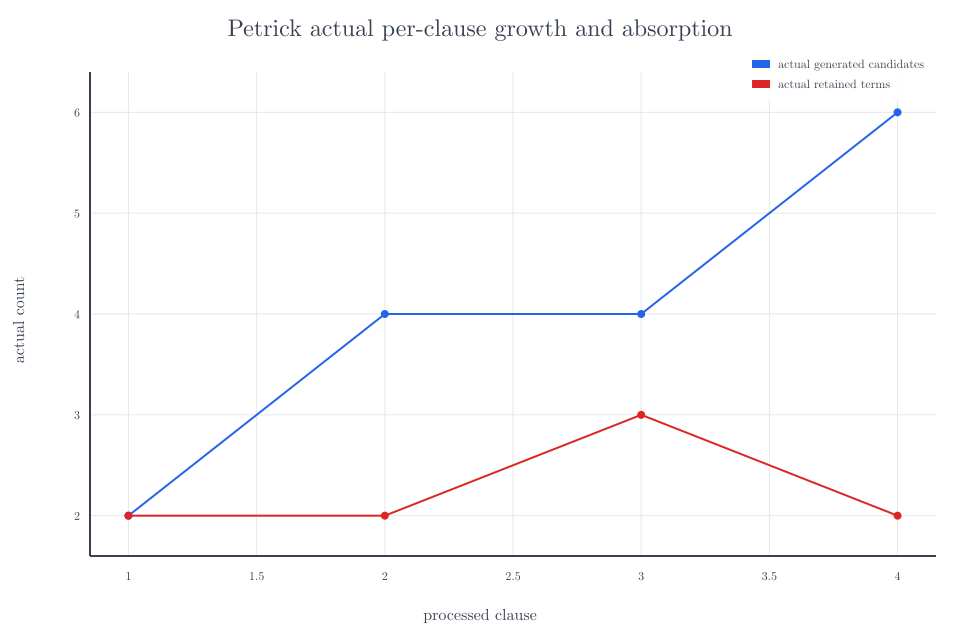

Petrick: actual expansion and absorption
Abstract
Each clause lists alternative implicant ids that cover one required minterm. Distributive expansion forms candidate id sets; absorption discards duplicates and supersets. The final smallest-cardinality surviving terms are all minimum-count covers. Literal costs are not minimised here. An empty chart has the identity empty cover; an empty clause is unsatisfiable. Exponential intermediate growth remains possible and is explicitly limited. The original three-variable cyclic Quine-McCluskey chart is retained; no external dataset is appropriate.
Mechanism and scope
Each clause lists alternative implicant ids that cover one required minterm. Distributive expansion forms candidate id sets; absorption discards duplicates and supersets. The final smallest-cardinality surviving terms are all minimum-count covers. Literal costs are not minimised here. An empty chart has the identity empty cover; an empty clause is unsatisfiable. Exponential intermediate growth remains possible and is explicitly limited. The original three-variable cyclic Quine-McCluskey chart is retained; no external dataset is appropriate.
The empty product is true and corresponds to the empty cover; an empty sum is false and makes the chart uncoverable.
A tiny actual producing history
The table and native diagram use the same producing run. Captured records own their values; the report does not reconstruct the algorithm.
#include <dm/dm.hpp>
int main() {
std::filesystem::create_directories("build");
auto t = dm::algorithms::petrick_trace({{0, 1}, {1, 2}});
std::print("| clause | actual candidates | absorbed | actual surviving terms |\n| ---: | ---: | ---: | " "--- |\n");
for (auto &r : t.stages)
std::print("| {} | {} | {} | `{}` |\n", r.clause, r.generated,
r.absorbed, r.terms);
dm::graphics::Diagram d;
d.node("n0", {0, 0},
std::format("Actual distributed candidates\n{}", t.generated));
d.node("n1", {8, 0},
std::format("Actual surviving terms\n{}", t.stages.back().terms));
d.node("n2", {16, 0},
std::format("Actual minimum-count covers\n{}",
t.result.minimal_covers));
d.edge("n0", "n1").edge("n1", "n2");
d.save_svg("build/petrick_tiny.svg");
}| clause | actual candidates | absorbed | actual surviving terms |
|---|---|---|---|
| 0 | 2 | 0 | [[0], [1]] |
| 1 | 4 | 2 | [[1], [0, 2]] |

The original fixture, retained
This complete program retains the original inputs, seed and substantive experiment. Any added display prefix is explicitly separate from the original random call schedule.
#include <dm/dm.hpp>
using namespace datamunge::algorithms;
using namespace datamunge::graphics;
int main() {
std::ostringstream original_output;
auto *original_cout = std::cout.rdbuf(original_output.rdbuf());
std::filesystem::create_directories("build");
std::vector<std::uint32_t> minterms = {0, 1, 2, 5, 6, 7};
auto qm = quine_mccluskey(3, minterms);
std::cout << "=== Cyclic chart: f(A,B,C) = sum m(0,1,2,5,6,7) ===\n";
std::cout << "prime implicants (" << qm.prime_implicants.size() << "): ";
for (const auto &p : qm.prime_implicants)
std::cout << implicant_to_string(p, 3) << " ";
std::cout << "\nessential prime implicants: " << qm.essential.size() <<
" (cyclic -> none)\n";
// Build the coverage chart and run Petrick directly.
std::vector<std::vector<int>> chart(minterms.size());
for (std::size_t mi = 0; mi < minterms.size(); ++mi)
for (std::size_t pi = 0; pi < qm.prime_implicants.size(); ++pi)
if (qm.prime_implicants[pi].covers(minterms[mi]))
chart[mi].push_back((int) pi);
auto pr = petrick(chart);
std::cout << "\nminimum covers found by Petrick (" <<
pr.minimal_covers.size() << ", each " <<
pr.minimal_covers.front().size() << " implicants):\n";
for (const auto &cover : pr.minimal_covers) {
std::cout << " { ";
for (int pi : cover)
std::cout << implicant_to_string(qm.prime_implicants[pi], 3) << " ";
std::cout << "}\n";
}
// Figure: the coverage chart as a grid, with the first minimum cover highlighted.
RPlot p = RPlot::create();
std::vector<double> cx, cy, hx, hy;
const auto &chosen = pr.minimal_covers.front();
for (std::size_t mi = 0; mi < minterms.size(); ++mi)
for (int pi : chart[mi]) {
bool in = false;
for (int c : chosen)
if (c == pi)
in = true;
if (in) {
hx.push_back((double) minterms[mi]);
hy.push_back((double) pi);
} else {
cx.push_back((double) minterms[mi]);
cy.push_back((double) pi);
}
}
p.points(cx, cy, "covers", {150, 150, 150}, 5.0);
p.points(hx, hy, "chosen cover", {220, 38, 38}, 7.0);
p.legend({"covers", "chosen cover"}, {{150, 150, 150}, {220, 38, 38}});
p.title("Original cyclic chart: one actual minimum-cardinality cover").x_label("required minterm").y_label("native prime-implicant id");
p.save_svg("build/petrick_original.svg");
std::cout << "\nwrote build/petrick_original.svg\n";
std::cout.rdbuf(original_cout);
std::print("| Original computed output |\n| --- |\n");
std::istringstream lines(original_output.str());
std::string line;
while (std::getline(lines, line)) {
while (!line.empty() && line.back() == ' ') line.pop_back();
if (!line.empty()) std::print("| `{}` |\n", line);
}
return 0;
}| Original computed output |
|---|
=== Cyclic chart: f(A,B,C) = sum m(0,1,2,5,6,7) === |
prime implicants (6): 00- 0-0 -01 -10 1-1 11- |
essential prime implicants: 0 (cyclic -> none) |
minimum covers found by Petrick (2, each 3 implicants): |
{ 0-0 -01 11- } |
{ 00- -10 1-1 } |
wrote build/petrick_original.svg |

Controls and boundary cases
#include <dm/dm.hpp>
int main() {
std::filesystem::create_directories("build");
std::vector<std::vector<std::vector<int>> > charts{{}, {{}}, {{0}, {0, 1}},
{{0, 1}, {1, 2}, {0, 2}}};
std::vector<std::string> labels{"identity", "uncoverable", "essential",
"cycle"};
std::vector<double> v;
std::print("| chart | actual minimum covers | actual generated candidates |\n| --- | --- | ---: |\n");
for (std::size_t i = 0; i < charts.size(); ++i) {
auto t = dm::algorithms::petrick_trace(charts[i]);
v.push_back(t.generated);
std::print("| {} | `{}` | {} |\n", labels[i], t.result.minimal_covers,
t.generated);
}
auto p =
dm::graphics::RPlot::barplot(v, labels, "actual generated products");
p.title("Petrick logical identity, false clause and alternative minimum covers").y_label("actual generated products");
p.save_svg("build/petrick_controls.svg");
}| chart | actual minimum covers | actual generated candidates |
|---|---|---|
| identity | [[]] | 0 |
| uncoverable | [] | 0 |
| essential | [[0]] | 3 |
| cycle | [[0, 1], [1, 2], [0, 2]] | 10 |

Producing work and finite observations
#include <dm/dm.hpp>
int main() {
std::filesystem::create_directories("build");
auto t = dm::algorithms::petrick_trace({{0, 1}, {1, 2}, {2, 3}, {3, 0}});
std::vector<double> x, y, z;
std::print("| clause | generated | absorbed | survivors |\n| ---: | ---: | ---: | ---: |\n");
for (auto &r : t.stages) {
x.push_back(r.clause + 1);
y.push_back(r.generated);
z.push_back(r.terms.size());
std::print("| {} | {} | {} | {} |\n", r.clause + 1, r.generated,
r.absorbed, r.terms.size());
}
auto p = dm::graphics::RPlot::create();
p.lines(x, y, "actual generated candidates", {37, 99, 235}).points(
x, y, {37, 99, 235}, 4).lines(x, z, "actual retained terms",
{220, 38, 38}).points(x, z, {220, 38, 38},
4).title(
"Petrick actual per-clause growth and absorption").x_label(
"processed clause").y_label("actual count");
p.save_svg("build/petrick_work.svg");
}| clause | generated | absorbed | survivors |
|---|---|---|---|
| 1 | 2 | 0 | 2 |
| 2 | 4 | 2 | 2 |
| 3 | 4 | 1 | 3 |
| 4 | 6 | 4 | 2 |

API and interpretation
All four blocks are complete editable C++ programs. Numerical tables retain raw native values; figures display only those returned records. Trace limits count documented logical records or scalar entries, not peak bytes or wall-clock work. Validation is complete before unchecked indexing; captured histories are educational owned storage. A returned result is interpreted under the algorithm-specific scope above, without a universal optimality, convergence or statistical-quality claim.
University of Michigan covering notes explain the product-of-sums covering formulation and absorption. The native objective here is minimum implicant count.
Verification
This ten-report batch passes 89 CTest cases, 20 ASan/UBSan cases with all ten
producing families directly instrumented, 62 compiled and executed public
examples, 200/200 scoped file definitions plus 15/15 exact PCG class
definitions, and ten representative clangd hovers. Independent Python
hashlib/HMAC and arbitrary-integer PCG checks verify 75189 records with 123243
checks. Native independent per-pixel visibility, exhaustive prefix reversals,
quadratic LIS, integer perceptron updates, sampled-label tail counts and
exhaustive Boolean-cover checks supplement frozen valid-input comparisons for
all ten producers. Ten checkout and ten byte-identical installed development
headers compile independently; an installed-header native consumer links and
runs. All 40 complete programs execute; all 40 native figures have been visually
reviewed. HTML/Markdown exports preserve computed result rows and identical
image bytes. These are scoped native checks. Receipts:
build/mepml-conversion/batch-274-283/.